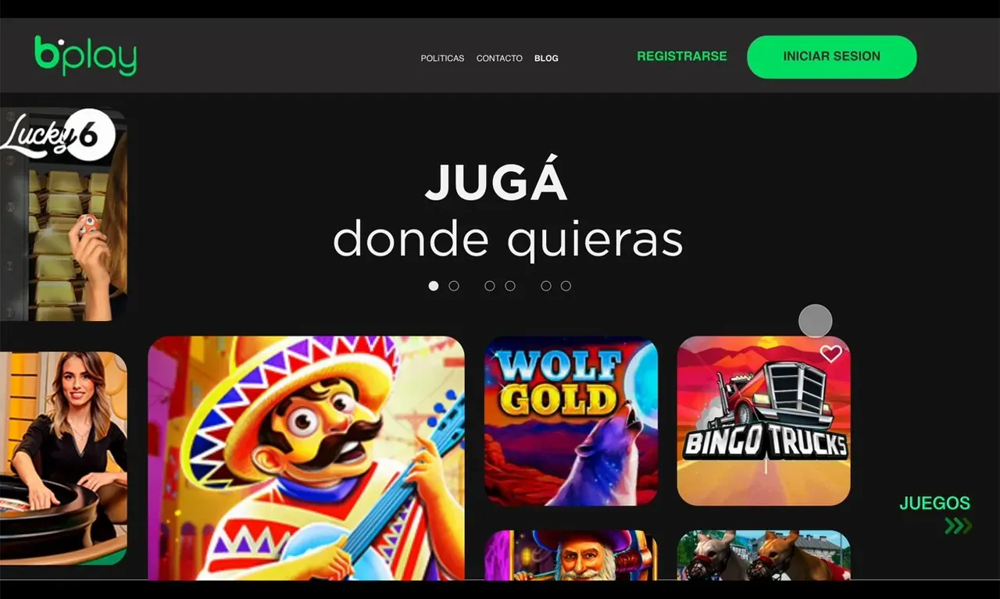
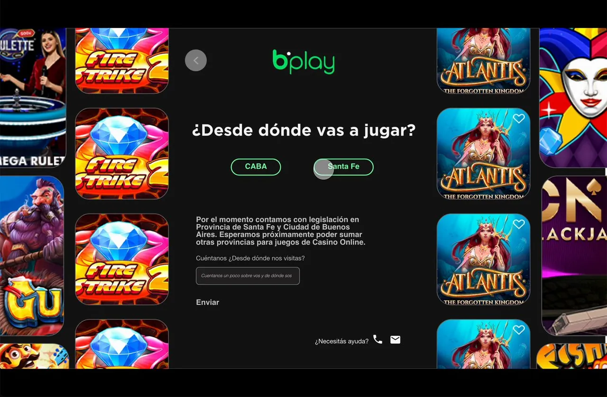
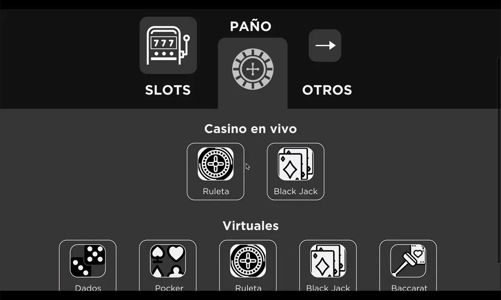
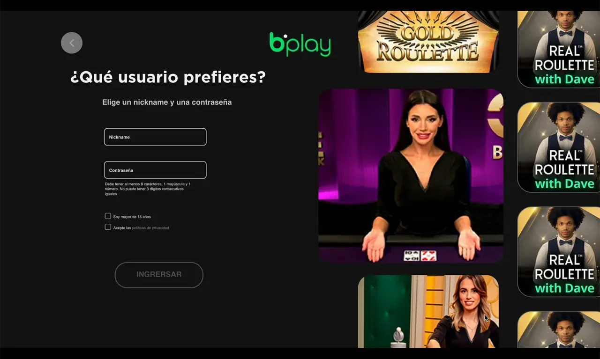
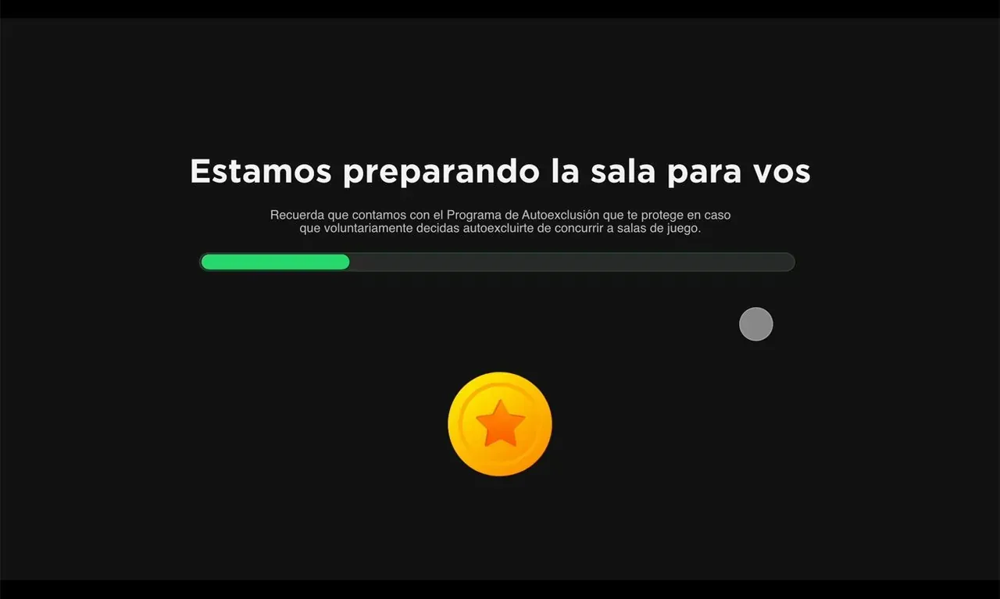
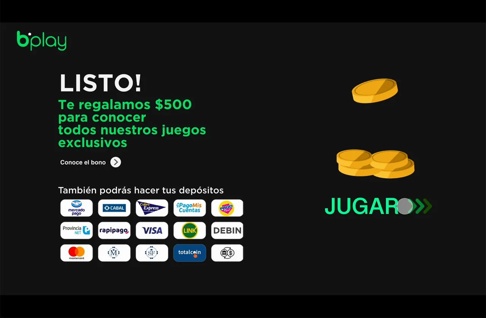
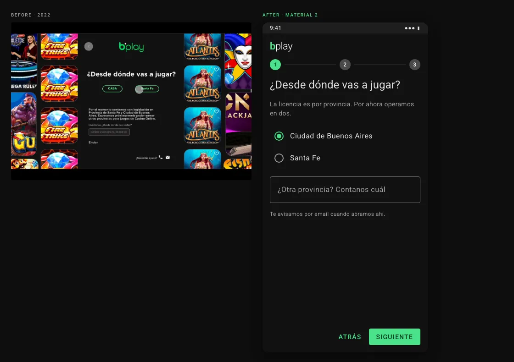

Bplay: הרשמה עם שלוש שאלות והמתנה שמיידעת
עיצוב ההרשמה וההטמעה של פלטפורמת קזינו והימורים אונליין ארגנטינאית: מהפרוטוטייפ ועד המסכים הסופיים, עם כל הרכיבים שלהם.
הזרימה
ההרשמה מבקשת רק את מה שהפלטפורמה צריכה כדי לבנות את הלובי של כל אדם, ומנצלת את ההמתנה שאחרי כדי לומר מה שמפעיל מורשה חייב לומר. שישה מסכים, הבטחה אחת.






החליקו הצידה או השתמשו בחצים. הקישו על צילום מסך כדי להגדיל אותו.
הפריימים לקוחים מסרטון הפרוטוטייפ שלי מ-2022. אין נתוני ייצור ואין נתוני שחקנים.
ההחלטות
- שלוש שאלות, לא טופס. פרובינציה, העדפות משחק ושם משתמש: בדיוק מה שצריך כדי להתחיל.
- קודם הפרובינציה, כי הרישיון הוא לפי פרובינציה.
- העדפות שבונות את הלובי: סלוטים, שולחנות לייב או וירטואליים, כך שמסך המשחק הראשון כבר שייך לאדם.
- המתנה שמעבירה מידע. בזמן שהלובי נטען, המסך מציג את הודעות המשחק האחראי שמפעיל מורשה חייב למסור.
- בונוס קבלת הפנים ואמצעי התשלום מגיעים בסוף, כשהאדם כבר בפנים.
המסכים הסופיים
- קודם כול הנייד.
- ערכת נושא כהה: משטחים #121212, elevation בשכבות לבנות וירוק ראשי לא רווי.
- Stepper שמאחד את שלוש השאלות במקום אחד.
- בקרי בחירה מובנים במקום pills מותאמים אישית.
- סרגל התקדמות מוגדר (determinate), עם ההודעות החובה ברשימה.
- הבונוס כ-snackbar בתוספת כרטיס, לא כמסך מלא.

ניגודיות, מחושבת
| נתון | מקור |
|---|---|
| ירוק ראשי על #121212 | 11.0:1, חישוב WCAG |
| טקסט ראשי ב-87 % לבן על #121212 | 14.2:1, חישוב WCAG |
| טקסט משני ב-60 % לבן על #121212 | 7.2:1, חישוב WCAG |
הרכיבים
כפתורים של 36 dp, שדות של 56 dp, מצבי hover, focus ולחיצה, elevation וסקאלה טיפוגרפית Roboto, הכול לסיור בעכבר ובמקלדת. באנגלית.